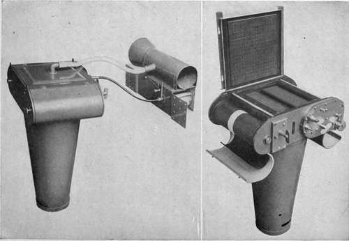

United States Air Service Automatic Film Camera. Type K (Figs. 64, 65, 92, 93, 98, 99)
Description
This section is from the book "Airplane Photography", by Herbert E. Ives. Also available from Amazon: Airplane photography.
United States Air Service Automatic Film Camera. Type K (Figs. 64, 65, 92, 93, 98, 99)
This is an entirely automatic camera, manufactured by the Folmer and Schwing Division of the Eastman Kodak Co., taking 100 pictures of 18X24 centimeter size at one loading. As with all the American cameras of this size, it uses the standard lens cones of any desired focal length. The camera proper consists of a compact chamber in which the film rollers are carried at each end forward of the focal plane, the shutter lying between. In consequence of this arrangment the vertical depth of the camera is the absolute minimum—short of decreasing the length of the optical path by mirror arrangements—making it possible to suspend the camera diagonally in the American and British planes, for taking oblique pictures.
Flatness of the film is secured by a suction plate covered with graphited cloth and connected with a Venturi tube. The top cover is removed for re-loading. The shutters on the first cameras of this type are of the variable-tension fixed-aperture design, though later ones have the variable-aperture curtain controlled by an idler, as used in the American deRam. An auxiliary curtain shutter serves to cap the true shutter during setting.
Fig. 64. - U. S. Type 44 K" (Folmer) automatic film camera, with wind turbine Fig. 65. - Type "K" camera, open, showing suction plate and Venturi tube.
The operation of the film driving mechanism is comparatively simple. It consists of a train of gears, driven by a flexible revolving shaft attached to some separate source of power capable of speed variation. The action of the gears is to move the film, set the shutter and then expose it; in the earlier cameras with the film continuously moving. In the first cameras constructed the space between the pictures varies as the film rolls up, due to the increasing diameter of the roll. In later cameras the film roller is disengaged from the gears just before the shutter is tripped, so that the film stands still during the exposure, and is then re-engaged at a new point on a ratchet wheel governed by the diameter of the receiving roll, whereby the pictures are equally spaced. In all the cameras, punch marks made at the time of exposure enable the limits of the picture to be detected in the dark room by touch.
Variable speed is arranged for in any one of several ways. For peace-time uses a turbine attached to the side of the plane is simple and positive, and, provided it is made of sufficient size—which is not the case with the one shown in the Figure —will give adequate speed regulation upon varying the aperture through which the air enters. The Venturi tube may be carried upon the same mount, or a small rotary pump can be attached on the same shaft. Where the high wind resistance of the turbine is an objection the camera is driven electrically, by a motor acting through the intermediary of a variable speed control described in the next chapter (Fig. 68).
The camera weighs complete about forty pounds, and the film rolls about four pounds. The latter can be changed in the air without great difficulty provided the camera is mounted accessibly and so that the top may be opened.
Continue to:
- prev: The German Film Mapping Camera
- Table of Contents
- next: Chapter XII. Motive Power For Aerial Cameras
Tags
camera, lens, airplane, aerial, film, exposure, photography, maps, birdseye